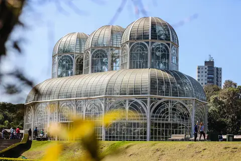
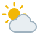

Dados
- Estado: Paraná (capital)
- População: cerca de 1,77 milhão de habitantes
- Área: cerca de 435 km²
- Altitude: cerca de 930 m
- Fundação: 29 de março de 1693
- Símbolo: a araucária, o pinheiro-do-paraná
- Pontos turísticos: Jardim Botânico, Ópera de Arame e Parque Tanguá
Clima

- Temperatura: 8 °C
- Condição: parcialmente nublado
- Vento: 12 km/h
- Sensação térmica: --